Teste de Hipóteses: ANOVA
Introdução
Este material cobre as Semanas 11 a 15 do plano de ensino: princípios de experimentação, Análise de Variância (ANOVA) para o Delineamento Inteiramente Casualizado (DCC) e para o Delineamento em Blocos Casualizados (DBC), com respectivos testes de comparações múltiplas, experimentos fatoriais (com e sem blocos) e delineamento em parcelas subdivididas, sempre ilustrados com exemplos de artigos científicos.
O conteúdo desta página é baseado em material didático elaborado por Paula Bracco (adaptado do material da prof. Lisiane Selau), especificamente voltado ao ensino de Análise de Variância aplicada à experimentação agronômica. Os exemplos em R reproduzidos ao longo da página vêm da coleção de scripts do professor (pasta codigos/, com prefixo area_3), aplicados aos mesmos exemplos apresentados nos slides. Todos os materiais originais — slides e scripts — estão disponíveis para download ao final desta página, na seção Materiais e Referências.
Princípios da Experimentação
A Estatística Experimental tem por objetivo o planejamento, a execução, a análise e a interpretação dos resultados obtidos em um experimento. Na agricultura, a experimentação pretende responder perguntas como: qual o melhor cultivar para se plantar (maior rendimento)? Qual o efeito de diferentes herbicidas (menos pragas)? Qual a melhor técnica de semeadura (maior rendimento)?
Para ser o mais eficiente possível, o experimento deve ser planejado a partir de uma metodologia científica apropriada. O delineamento (ou planejamento) experimental é o processo de planejar o experimento de modo que todos os dados apropriados sejam coletados, resultando em conclusões objetivas e válidas — dados apropriados sendo aqueles que possam ser analisados através de métodos estatísticos.
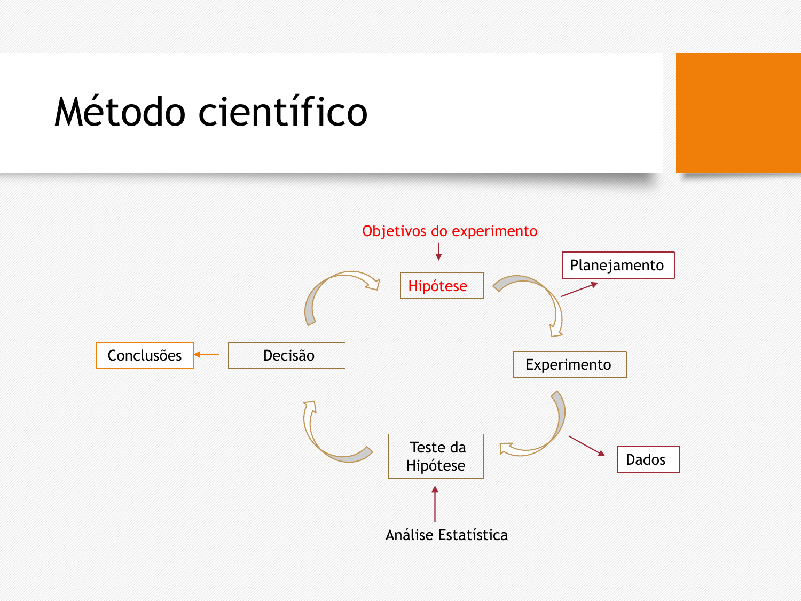
O objetivo do experimento é que ele seja o mais controlado possível, ou seja, que a única diferença sistemática entre os grupos comparados seja o fator/tratamento de interesse (tipo de semente, tipo de herbicida, quantidade de nutriente do solo, etc.). Como nenhum experimento é 100% controlado, sempre existirão fatores que podem diferir entre os grupos e que não conseguimos controlar (pequenas variações nas lâminas de irrigação, em infestações por pragas, na fertilidade dos solos) — o efeito desses fatores não controlados sobre a resposta de interesse é chamado de variação aleatória, ao acaso ou residual.
Planejamento do experimento
O planejamento de um experimento envolve, essencialmente, quatro decisões:
- Variável resposta: qual característica será estudada (altura ou comprimento das plantas, produção de grãos/rendimento, etc.).
- Fatores e níveis: quais fatores afetam essa resposta e quais os níveis de cada fator — importante identificar quais podem e quais não podem ser controlados (variedade, adubação, irrigação, qualidade da semente, temperatura, incidência de luz, etc.). Em um experimento simples, apenas um fator é estudado (os demais são mantidos constantes); em experimentos complexos (fatoriais), estudamos simultaneamente o efeito de dois ou mais fatores.
- Unidade experimental (ou parcela): onde os diferentes níveis do tratamento são aplicados — idealmente as unidades experimentais devem ser as mais semelhantes/uniformes possível, para reduzir a variação aleatória. Exemplos: uma área de campo, um vaso com solo, uma sementeira, uma placa de Petri, um tubo de ensaio, uma árvore, uma folha da planta.
- Número de repetições: depende do número de tratamentos utilizados; é usual que os experimentos possuam pelo menos 3 repetições.
Princípios básicos da experimentação
Repetição. O princípio da repetição consiste na reprodução do experimento básico. O fato de um tratamento se comportar melhor que outro em uma única unidade experimental pouco ou nada significa, pois pode ter havido um comportamento superior por simples acaso — por isso, consideramos o comportamento médio de cada tratamento ao longo de várias parcelas. As repetições são necessárias para estimar o erro experimental (a variabilidade da resposta entre unidades experimentais que receberam o mesmo tratamento) e para avaliar, de forma mais precisa, o efeito de cada tratamento.
Casualização (aleatorização). É a distribuição dos tratamentos às unidades experimentais de forma casual (aleatória, randômica), para evitar que um determinado tratamento venha a ser beneficiado por sucessivas repetições em parcelas melhores. É a alocação dos tratamentos aleatoriamente sobre as unidades experimentais — sorteando qual unidade receberá cada tratamento e cada repetição.
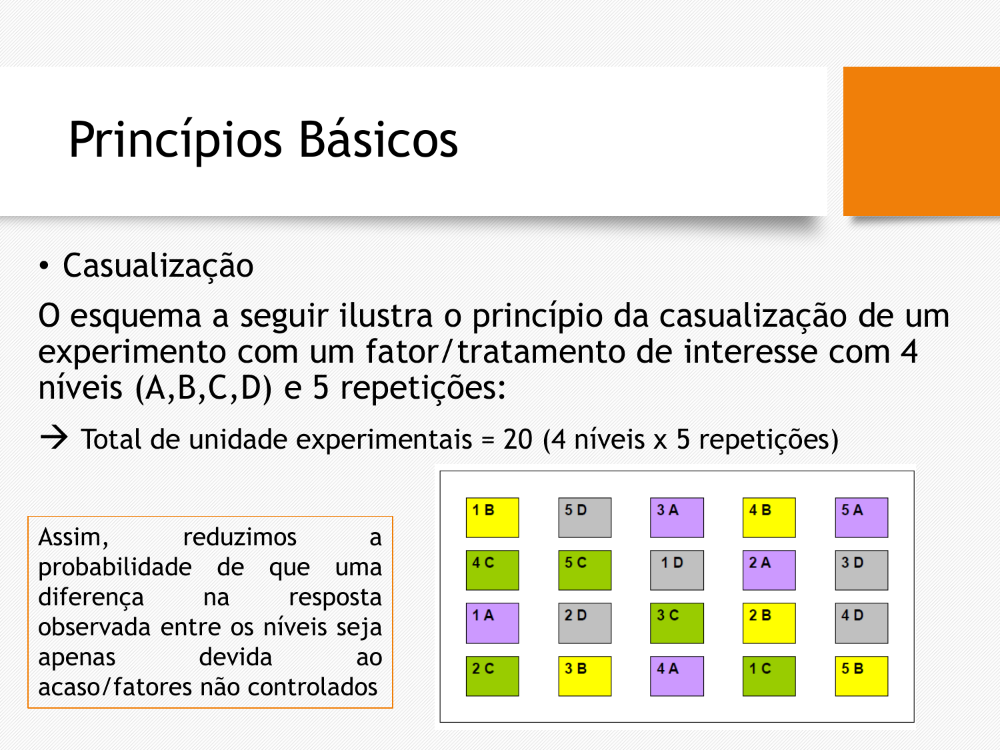
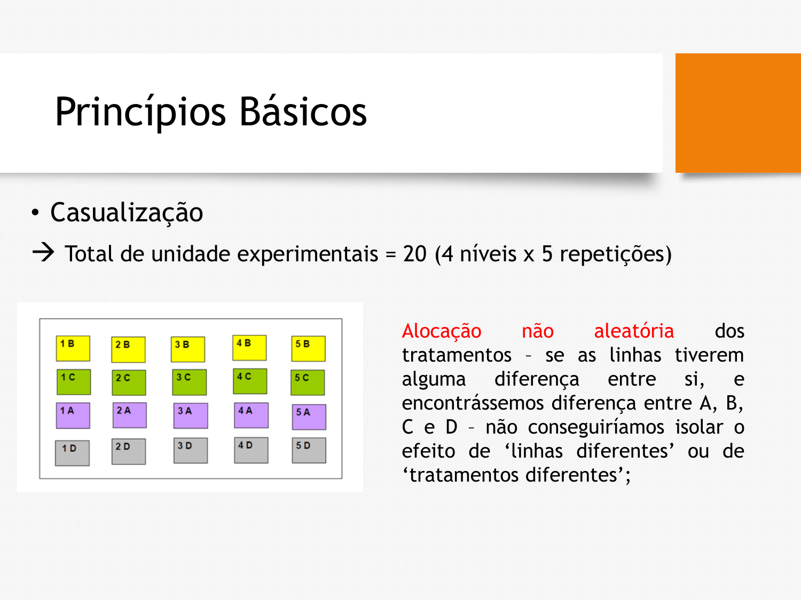
Controle local / blocos. Não é de uso obrigatório: quando conhecemos um fator que pode ser uma fonte de variação, podemos controlá-lo com o uso de blocos. Trata-se da formação de grupos de unidades experimentais o mais homogêneos possível (cada grupo constitui um bloco), de modo a reduzir o erro experimental — os tratamentos são sorteados dentro de cada bloco.
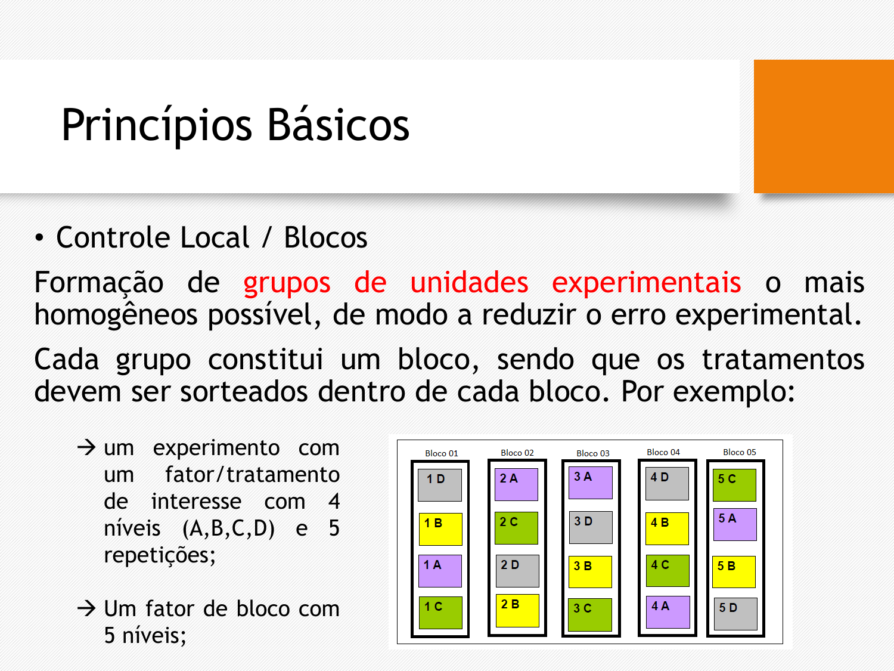
ANOVA: a ideia geral
A Análise de Variância (ANOVA) é a técnica que nos permite decompor a variabilidade total da resposta (a variação da resposta de interesse entre todas as unidades experimentais) em partes atribuídas a: (i) variação devido a causas conhecidas e independentes (níveis do tratamento); (ii) variação relacionada a causas controladas pelo delineamento experimental (blocos, quando existirem); e (iii) uma porção residual, de origem desconhecida e natureza aleatória (devida aos fatores não controlados).
Delineamento Inteiramente Casualizado (DCC)
O Delineamento Completamente Casualizado (DCC) é indicado quando as unidades experimentais são homogêneas, ou seja, não há fundamento lógico para a formação de blocos (grupos). Cada unidade recebe, por sorteio, um dos tratamentos que deverão ser comparados — nenhuma restrição é imposta ao processo de casualização, que é feito considerando o conjunto completo das unidades experimentais.
Exemplo de referência
Os dados a seguir referem-se ao rendimento (t/ha) de 4 variedades de cana-de-açúcar (A, B, C e D) em um experimento de competição, com 6 repetições por variedade, instalado no DCC. Objetivo: identificar a(s) variedade(s) que produz(em) maior rendimento médio.
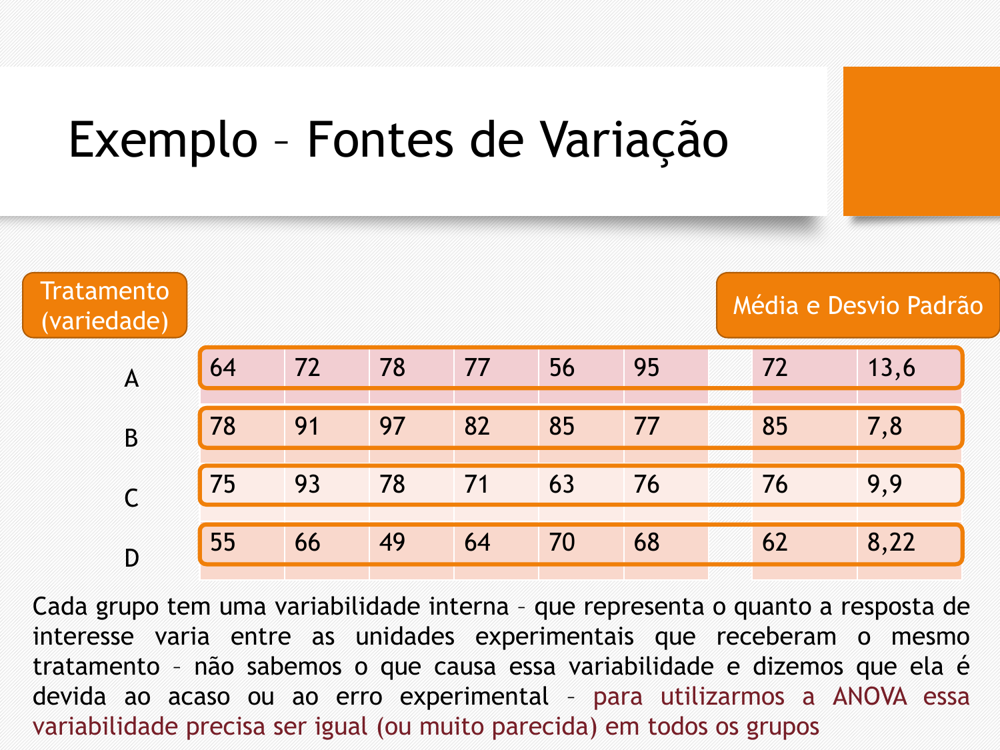
Cada grupo tem uma variabilidade interna (o quanto a resposta varia entre unidades que receberam o mesmo tratamento) — essa variabilidade é atribuída ao acaso ou erro experimental. Há também uma variabilidade entre grupos, medida pela dispersão das médias de cada grupo em torno da média geral — essa variabilidade tem uma causa conhecida: os diferentes tratamentos aos quais cada grupo foi exposto.
Decomposição da variabilidade
No DCC, a variação total é decomposta em duas partes: devida aos tratamentos e devida ao erro experimental. A Soma de Quadrados Total é dada por:
\[ SQ_{Total} = \sum_i \sum_j \left(y_{ij} - \bar{y}_{..}\right)^2 = \underbrace{r\sum_i \left(\bar{y}_{i.} - \bar{y}_{..}\right)^2}_{SQ_{Tratamentos}} + \underbrace{\sum_i \sum_j \left(y_{ij} - \bar{y}_{i.}\right)^2}_{SQ_{Erro}} \]
\(SQ_{Tratamentos}\) representa a variação das médias dos tratamentos em torno da média geral; \(SQ_{Erro}\) representa a variação dentro de cada tratamento (entre unidades experimentais que receberam o mesmo tratamento). Os graus de liberdade se decompõem de forma análoga: \((rt-1) = (t-1) + t(r-1)\), sendo \(t\) o número de tratamentos e \(r\) o número de repetições.
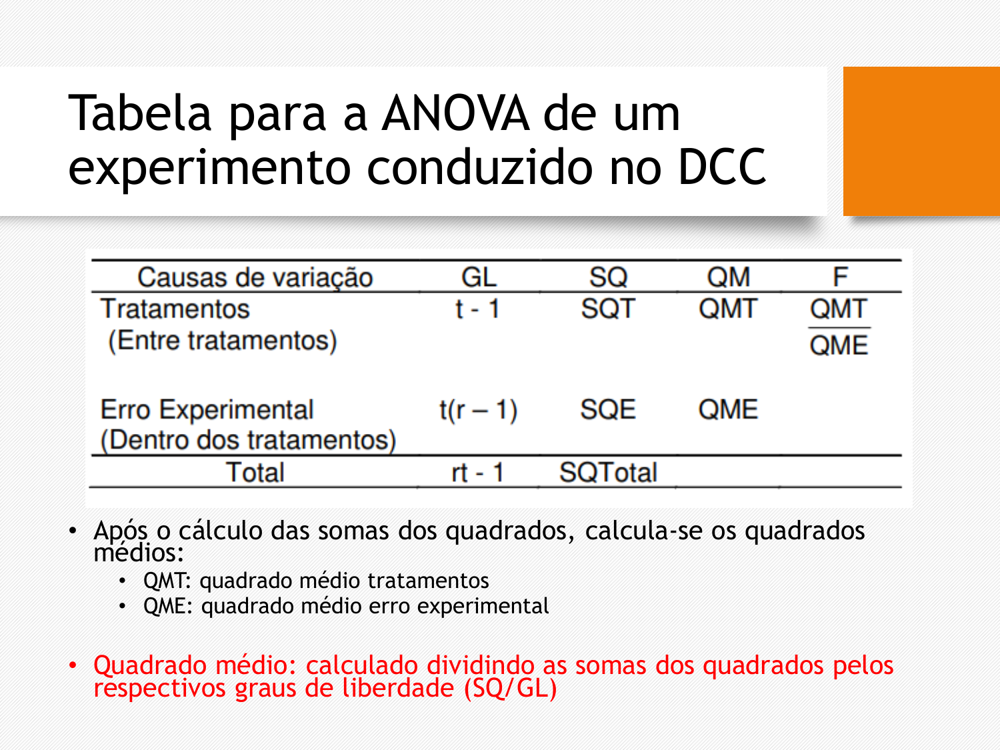
Hipóteses do teste:
\[ H_0: \mu_1 = \mu_2 = \ldots = \mu_t \qquad \text{vs.} \qquad H_A: \text{pelo menos uma média difere das demais} \]
A estatística do teste é \(F = QM_{Tratamento}/QM_{Erro}\). O \(QM_{Erro}\) estima a variação ao acaso; o \(QM_{Tratamento}\) estima a variação ao acaso mais a variação devida aos diferentes níveis do tratamento. Se a variação entre as médias dos tratamentos for semelhante à variação do erro experimental, \(F\) será próximo de 1 e a diferença não será significativa; quanto maior \(F\) em relação a 1, maior a evidência de que os tratamentos realmente diferem entre si.
Resultado do exemplo
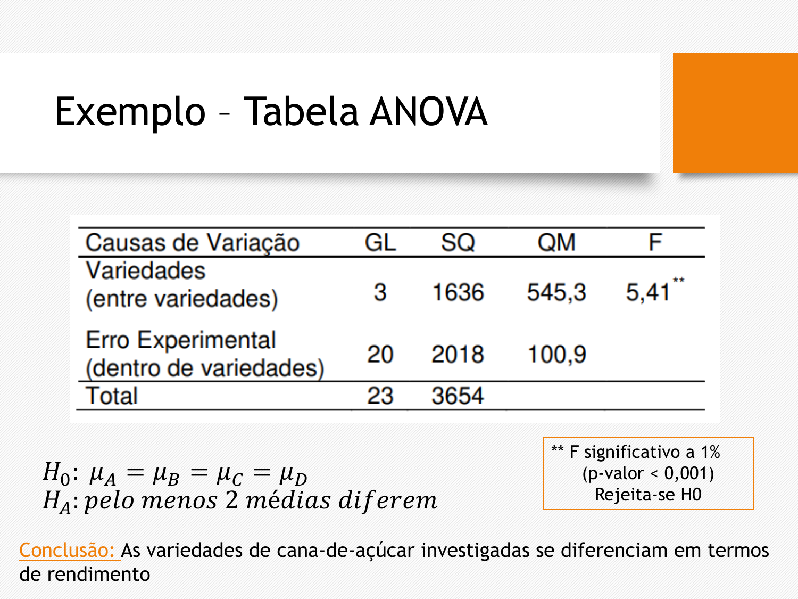
Como \(F = 5{,}41 > F_{0{,}01(3,20)}\), rejeita-se \(H_0\): as variedades de cana-de-açúcar investigadas se diferenciam em termos de rendimento. Mas rejeitar \(H_0\) indica apenas que pelo menos um dos grupos difere dos demais — não indica quais grupos diferem entre si quando comparados dois a dois. Para isso, usa-se um teste de comparação múltipla (teste post-hoc), sendo o mais usado o teste de Tukey — similar ao teste \(t\), mas controlando o nível de significância (erro Tipo I) ao longo de todas as comparações simultâneas.
Coeficiente de determinação (\(R^2\)): mede a proporção da variação total explicada pela variação devida aos tratamentos, \(R^2 = SQ_{Trat}/SQ_{Total}\). No exemplo, \(R^2 = 1636/3654 = 0{,}4477\) — aproximadamente 45% da variação total do rendimento é explicada pela variação entre variedades.
Coeficiente de Variação (CV): dá uma ideia da variabilidade aleatória (sem causa conhecida) do experimento, \(CV = \sqrt{QM_{Erro}}/\bar{y}_{..} \times 100\). No exemplo, \(CV = \sqrt{100{,}9}/73{,}75 = 13{,}62\%\). Como regra geral, experimentos de laboratório não devem ter CV muito maior que 10%, e experimentos de campo costumam ficar em torno de 30% — o mais importante é comparar o CV obtido com o de experimentos semelhantes na literatura.
Vantagens do DCC: é flexível quanto ao número de tratamentos e repetições (o número de repetições pode até variar de tratamento a tratamento, por exemplo por perda de observações durante a execução) e a análise estatística permanece simples mesmo quando o número de repetições não é balanceado.
Exemplo em R
O workflow completo de uma ANOVA no DCC — estatísticas descritivas, gráfico exploratório, ajuste do modelo, diagnóstico das suposições e comparações múltiplas — pode ser reproduzido em R com o mesmo exemplo das variedades de cana-de-açúcar:
# Pacotes utilizados
packages <- c("dplyr", "ggplot2", "tidyr", "car", "agricolae", "readr")
for (pkg in packages) {
if (!requireNamespace(pkg, quietly = TRUE)) install.packages(pkg, dependencies = TRUE)
library(pkg, character.only = TRUE)
}
# Dados: rendimento (t/ha) de 4 variedades de cana-de-açúcar
dados <- data.frame(A = c(64,72,68,77,56,95),
B = c(78,91,97,82,85,77),
C = c(75,93,78,71,63,76),
D = c(55,66,49,64,70,68))
# Reorganizando para o formato longo
dados2 <- tidyr::pivot_longer(dados, cols = c('A','B','C','D'),
names_to = 'Fator', values_to = 'Resposta') %>%
mutate(Fator = factor(Fator))
# Estatísticas descritivas por grupo
dados2 %>%
group_by(Fator) %>%
summarise(count = n(), mean = mean(Resposta), sd = sd(Resposta), median = median(Resposta))
# Boxplot exploratório (com a média sobreposta)
ggplot(dados2, aes(x = Fator, y = Resposta, fill = Fator)) +
geom_boxplot(alpha = 0.7) +
stat_summary(fun = mean, geom = "point", size = 4, color = "black") +
theme_minimal() +
labs(title = "Distribuição da resposta por nível do fator", x = "Fator", y = "Resposta")
# Ajuste da ANOVA de um fator
modelo <- aov(Resposta ~ Fator, data = dados2)
summary(modelo)
# Diagnóstico das suposições
par(mfrow = c(2, 2)); plot(modelo); par(mfrow = c(1, 1))
shapiro.test(residuals(modelo)) # normalidade dos resíduos
bartlett.test(Resposta ~ Fator, data = dados2) # homogeneidade de variâncias (Bartlett)
car::leveneTest(Resposta ~ Fator, data = dados2) # homogeneidade de variâncias (Levene)
# Médias por grupo e comparações múltiplas
model.tables(modelo, type = "means")
TukeyHSD(modelo)
plot(TukeyHSD(modelo))
# Alternativa com o pacote agricolae
agricolae::HSD.test(modelo, trt = 'Fator')Aplicações em artigos científicos
Artigo 1 — Enxertia em mudas de baruzeiro (DOI: 10.5902/1980509869090). Delineamento: DCC. Tratamento: 3 sistemas de condução (sacos plásticos a pleno sol, sacos plásticos sob sombrite 50%, tubetes em viveiros a pleno sol), com 36 repetições para cada tipo de enxertia. Unidade experimental: mudas. Respostas de interesse: altura, diâmetro e razão altura/diâmetro. Houve diferença significativa em todas as respostas quando os 3 grupos foram comparados; pelo teste de comparação múltipla, a altura média foi diferente entre todos os grupos, sendo a maior altura observada no grupo com enxertia de saco plástico a pleno sol.
Artigo 2 — Irrigação em feijão-vagem (DOI: 10.1590/S0100-69162011000200012). Delineamento: DCC. Tratamento: reposição de água no solo, com 5 níveis (50%, 75%, 100%, 125% e 150%), 4 repetições cada. Unidade experimental: canteiro de 2,2 × 0,3 m. Respostas: produção, número de vagens, peso médio das vagens e número de sementes por vagem. As diferentes lâminas de irrigação foram uma fonte de variabilidade significativa para o número de vagens e para a produção. Como o tratamento é quantitativo (uma dose de água), os autores complementaram a ANOVA com uma análise de regressão — encontrando uma relação quadrática entre a lâmina de irrigação e o número de vagens por planta, com máximo estimado em 19,5 vagens/planta para uma lâmina de 200 mm.
Delineamento em Blocos Casualizados (DBC)
Um fator de ruído ou perturbação é um fator de delineamento que provavelmente tem efeito na resposta, mas que não nos interessa avaliar diretamente — quando esse fator é conhecido e controlável, o bloqueamento permite eliminar seu efeito nas comparações estatísticas entre tratamentos.
O Delineamento em Blocos Casualizados (DBC) é um dos delineamentos mais usados nas pesquisas em diferentes áreas. É um delineamento com uma restrição na aleatorização: as unidades experimentais são primeiro organizadas em grupos homogêneos (blocos) e, então, os tratamentos são alocados aleatoriamente dentro de cada bloco — os tratamentos se repetem em todos os blocos. O objetivo é ter heterogeneidade entre blocos e homogeneidade dentro dos blocos, reduzindo a variância do erro experimental e aumentando a precisão das inferências.
Estrutura da ANOVA no DBC
A variação total das observações \(y_{ij}\) é decomposta em três partes: variação devida a tratamentos (\(SQ_{Tratamentos}\)), variação devida a blocos (\(SQ_{Blocos}\)) e variação devida ao erro experimental (\(SQ_{Erro}\)):
\[ \sum_i \sum_j \left(y_{ij}-\bar{y}_{..}\right)^2 = r\sum_i \left(\bar{y}_{i.}-\bar{y}_{..}\right)^2 + t\sum_j\left(\bar{y}_{.j}-\bar{y}_{..}\right)^2 + \sum_i\sum_j\left(y_{ij}-\bar{y}_{i.}-\bar{y}_{.j}+\bar{y}_{..}\right)^2 \]
| Causas da Variação | GL | SQ | QM | F |
|---|---|---|---|---|
| Blocos | \(r-1\) | \(SQB\) | \(QMB\) | \(QMB/QME\) |
| Tratamentos | \(t-1\) | \(SQT\) | \(QMT\) | \(QMT/QME\) |
| Erro experimental | \((t-1)(r-1)\) | \(SQE\) | \(QME\) | |
| Total | \(rt-1\) | \(SQ_{Total}\) |
O teste de significância da diferença entre as médias dos tratamentos é dado pelo teste \(F = QMT/QME\), testando \(H_0: \mu_1 = \mu_2 = \ldots = \mu_t\). É possível, de forma aproximada, calcular também \(F = QMB/QME\) para os blocos — mas esse teste é discutível, pois a aleatorização foi feita para os tratamentos e não para os blocos, e geralmente não é reportado.
Exemplo de referência: cultivares de trigo
Em um ensaio comparativo de 5 cultivares de trigo (A, B, C, D, E), usou-se o DBC com 4 repetições. O bloqueamento teve por finalidade controlar diferenças de fertilidade do solo no campo experimental. Os rendimentos de grão por parcela (t/ha) foram:
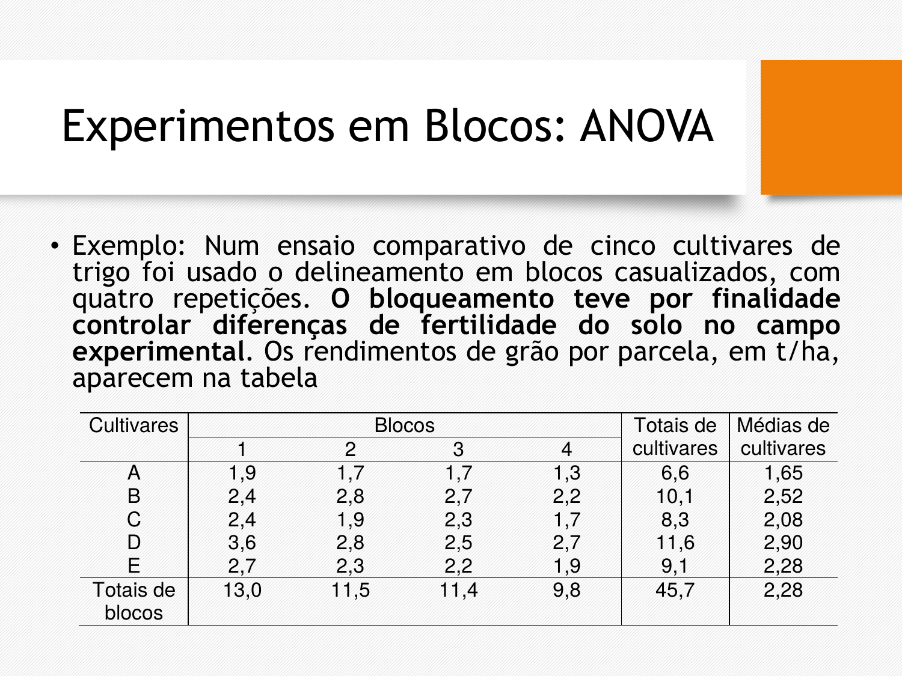
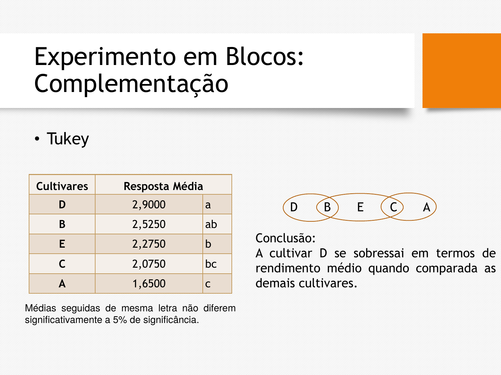
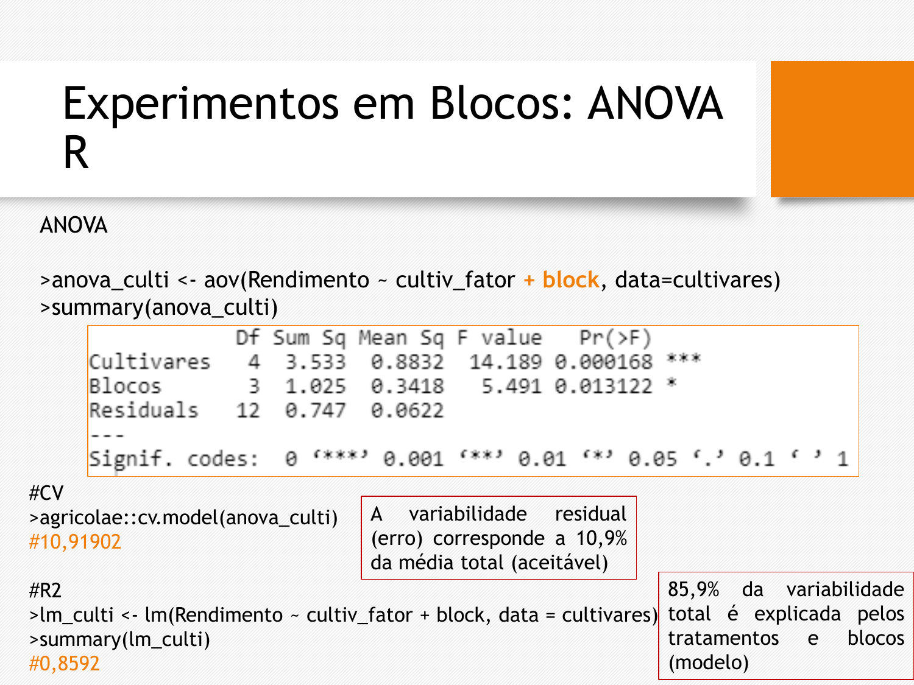
Complementando a ANOVA com o teste de Tukey, obtém-se o agrupamento das cultivares: D (2,90) > B (2,53), ambas superiores a E (2,28) e C (2,08), sendo A (1,65) a de menor rendimento — a cultivar D se sobressai em termos de rendimento médio quando comparada às demais.
Em R, essa análise pode ser conduzida com:
anova_culti <- aov(Rendimento ~ cultiv_fator + block, data = cultivares)
summary(anova_culti)
# Teste de Tukey
agricolae::HSD.test(anova_culti, 'cultiv_fator', alpha = 0.05, console = TRUE)
plot(TukeyHSD(anova_culti))
# Coeficiente de variação e R²
agricolae::cv.model(anova_culti)
lm_culti <- lm(Rendimento ~ cultiv_fator + block, data = cultivares)
summary(lm_culti)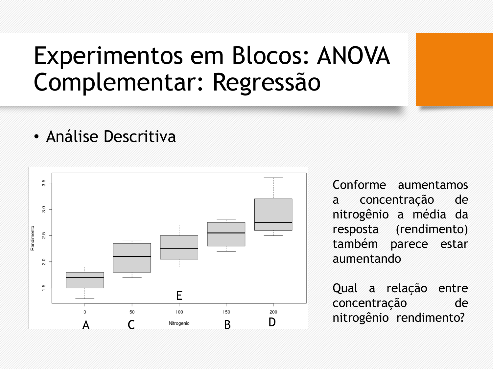
No exemplo, o coeficiente de variação foi de 10,9% (variabilidade residual aceitável) e 85,9% da variabilidade total do rendimento foi explicada pelo modelo (cultivares + blocos).
Workflow completo em R
Reorganizando os mesmos dados em formato longo (um Fator, com 5 níveis, e um Bloco, com 4 níveis), o workflow completo — estatísticas descritivas, ajuste, diagnóstico e comparações múltiplas — fica:
# Dados: rendimento (t/ha) das 5 cultivares de trigo, cada bloco com uma repetição de cada nível
dados <- data.frame(A = c(1.9, 1.7, 1.7, 1.3),
B = c(2.4, 2.8, 2.7, 2.2),
C = c(2.4, 1.9, 2.3, 1.7),
D = c(3.6, 2.8, 2.5, 2.7),
E = c(2.7, 2.3, 2.2, 1.9))
cultivares <- tidyr::pivot_longer(dados, cols = c('A','B','C','D','E'),
names_to = 'Fator', values_to = 'Resposta') %>%
mutate(Fator = factor(Fator)) %>%
mutate(Bloco = factor(rep(1:4, each = 5)))
cultivares %>%
group_by(Fator) %>%
summarise(count = n(), mean = mean(Resposta), sd = sd(Resposta), median = median(Resposta))
# Ajuste da ANOVA (fator + bloco)
anova_culti <- aov(Resposta ~ Fator + Bloco, data = cultivares)
summary(anova_culti)
# Diagnóstico
par(mfrow = c(2, 2)); plot(anova_culti); par(mfrow = c(1, 1))
# Comparações múltiplas
agricolae::HSD.test(anova_culti, 'Fator', alpha = 0.05, console = TRUE)
plot(TukeyHSD(anova_culti))Exemplo lúdico em sala de aula: comparação de sabores
Um experimento em blocos casualizados também pode nascer de uma atividade simples em aula. Sete participantes provaram três sabores (A, B, C) e atribuíram uma nota a cada um — cada participante funciona como um bloco (controlando a variação natural do paladar de cada avaliador), e o sabor é o tratamento de interesse:
n_alunos_participantes <- 7
n_niveis_fator <- 3 # quantidade de sabores diferentes
# Notas atribuídas por cada participante a cada sabor
dados <- data.frame(Sabor_A = c(10, 8, 7, 10, 9, 9, 5.5),
Sabor_B = c(7, 9, 9, 9, 10, 10, 5),
Sabor_C = c(8, 9, 8, 7, 9, 9, 6))
dados_reorg <- tidyr::pivot_longer(dados,
cols = c('Sabor_A', 'Sabor_B', 'Sabor_C'),
names_to = 'Fator', values_to = 'Notas') %>%
mutate(Fator = factor(Fator)) %>%
mutate(Bloco = factor(paste0('Participante_', rep(1:n_alunos_participantes, each = n_niveis_fator))))
# Estatísticas descritivas por sabor e por participante
dados_reorg %>% group_by(Fator) %>% summarise(mean = mean(Notas), sd = sd(Notas))
dados_reorg %>% group_by(Bloco) %>% summarise(mean = mean(Notas), sd = sd(Notas))
# Boxplot das notas por sabor
ggplot(dados_reorg, aes(x = Fator, y = Notas, fill = Fator)) +
geom_boxplot(alpha = 0.7) +
stat_summary(fun = mean, geom = "point", size = 4, color = "black") +
theme_minimal() +
labs(title = "Distribuição das notas por sabor", x = "Sabor", y = "Nota")
# ANOVA (Sabor + Participante como bloco)
anova_blocos <- aov(Notas ~ Fator + Bloco, data = dados_reorg)
summary(anova_blocos)
# Comparações múltiplas
agricolae::HSD.test(anova_blocos, 'Fator', alpha = 0.05, console = TRUE)
plot(TukeyHSD(anova_blocos))Esse tipo de experimento didático ilustra bem a lógica do bloqueamento: ao tratar cada participante como um bloco, isolamos a variação devida ao paladar individual (alguns avaliadores dão notas sistematicamente mais altas ou mais baixas que outros) da variação devida ao sabor em si — o que aumenta a precisão da comparação entre os sabores A, B e C.
Complementação com regressão. Quando o tratamento é uma variável quantitativa (por exemplo, doses de nitrogênio aplicadas ao solo), a ANOVA pode ser complementada por uma análise de regressão. No exemplo do nitrogênio: \(\hat{y} = 2{,}18 + 0{,}0059x\), com \(R^2 = 83{,}5\%\) — a cada Kg/ha de nitrogênio aplicado, estima-se um incremento médio de 5,9 g/ha no rendimento de trigo, independente do bloco.
Aplicação em artigo científico
Artigo 3 — Nutrientes do solo em cassava (mandioca) (acesso ao artigo). Tratamento: tipo de nutriente no solo/matéria orgânica, com 6 níveis; blocos: 6 variedades de cassava (cada variedade recebeu os 6 tipos de matéria). Resposta: crescimento (altura) das plantas. O efeito dos diferentes tipos de matéria orgânica foi significativo (p ≈ 0,000), mas o efeito das variedades usadas como bloco não foi significativo (p = 0,699) — sugerindo que, neste caso específico, talvez não fosse necessário ter usado o delineamento em blocos. Pelo teste de comparação múltipla, as matérias cattle dung, palm waste, NPK e poultry waste não diferiram entre si, mas apresentaram crescimento médio significativamente maior do que os solos com green manure e placebo.
Experimentos Fatoriais
Em um experimento fatorial, dois ou mais fatores de tratamento são estudados simultaneamente — os tratamentos passam a ser as combinações dos níveis dos diferentes fatores (por exemplo, em um fatorial 2×2 com fatores A e B, cada um com 2 níveis, temos 4 tratamentos: \(a_1b_1\), \(a_1b_2\), \(a_2b_1\), \(a_2b_2\)). Os fatores podem ser qualitativos (cultivares, rações, fármacos, dietas) ou quantitativos (doses de nitrato, temperatura, pressão).
Experimentos fatoriais são úteis em pesquisas exploratórias, para encontrar os fatores mais importantes em novas áreas de estudo, e principalmente para investigar interações entre fatores: a resposta a um fator depende do nível de um ou mais dos outros fatores.
Efeito principal, efeito simples e interação
- Efeito simples: efeito de um fator dentro de cada nível do outro fator.
- Efeito principal: média dos efeitos simples.
- Interação: a magnitude do efeito adicional observado em um dos fatores, na presença de cada nível do outro fator — um efeito que não é produzido por nenhum dos fatores isoladamente.
Um exemplo clássico ilustra a ideia com o tempo de aprendizagem (minutos) segundo sexo e idade:
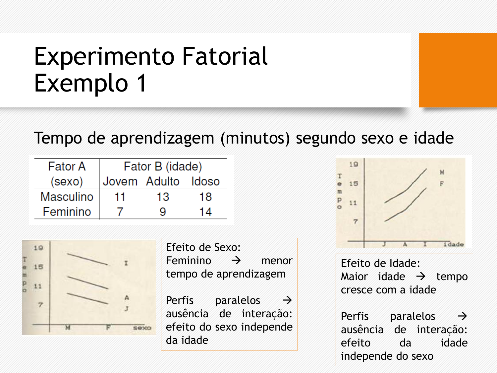
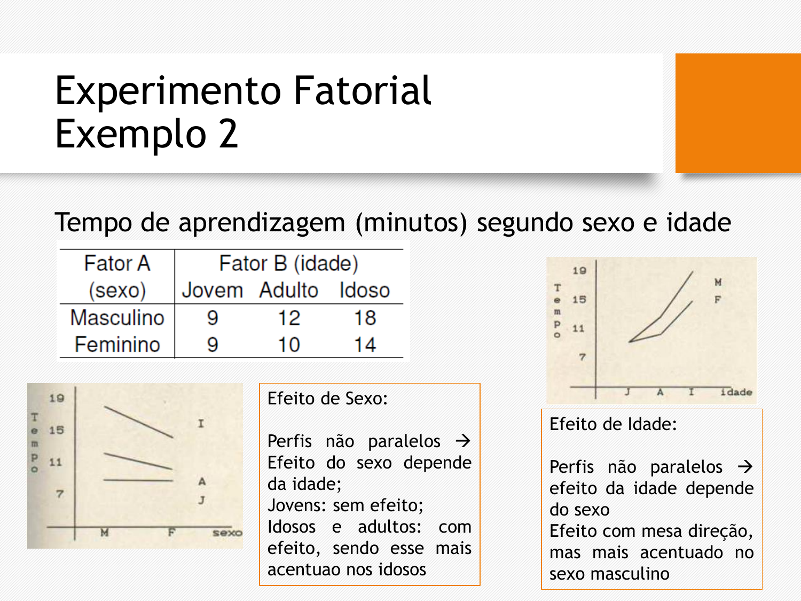
Quando a interação é forte, os efeitos principais isolados podem até ser enganosos — o efeito “verdadeiro” de um fator só pode ser interpretado dentro de cada nível do outro fator.
Vantagens dos experimentos fatoriais: maior eficiência no uso dos recursos experimentais (permitem conclusões mais amplas sobre vários fatores simultaneamente); informação sobre interação entre fatores; e repetições intrínsecas (os níveis de um fator se repetem em cada nível do outro fator), aumentando a precisão das estimativas dos efeitos principais. Desvantagens: maior dificuldade em selecionar unidades experimentais homogêneas, dado o maior número de tratamentos (combinações); e, com muitos fatores, maior dificuldade na escolha e execução do delineamento.
Exemplo: hormônio e sexo em cordeiros
Foi conduzido um experimento para avaliar o efeito do implante do hormônio Stilbestrol sobre o ganho de peso de cordeiros machos e fêmeas da raça Corriedale, em um intervalo de 180 dias após o implante.
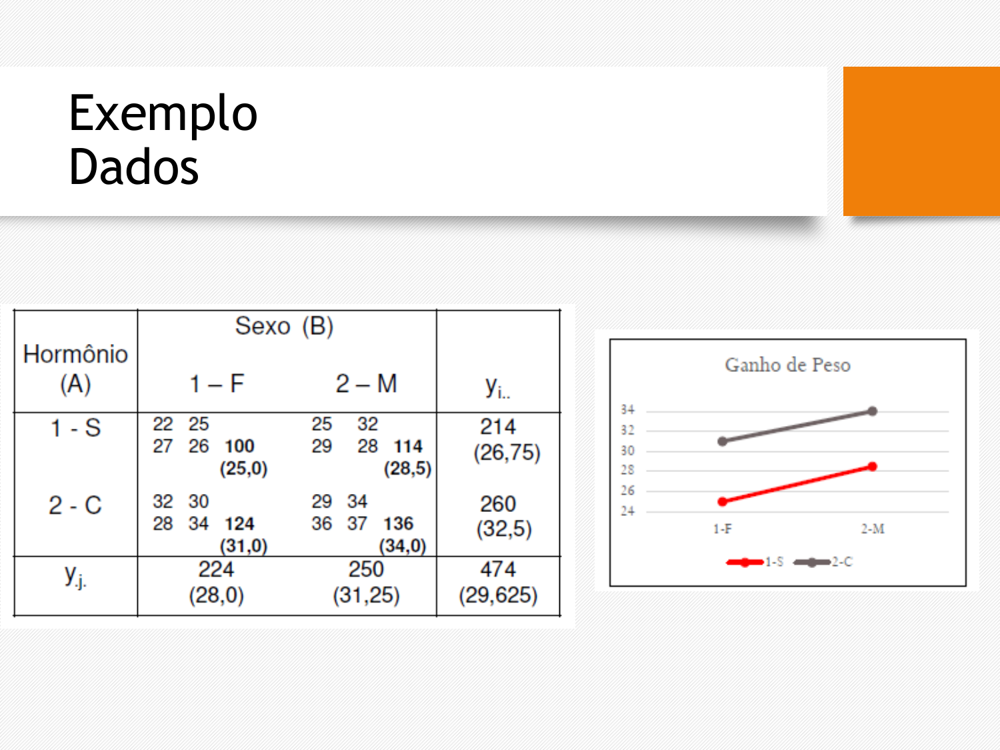
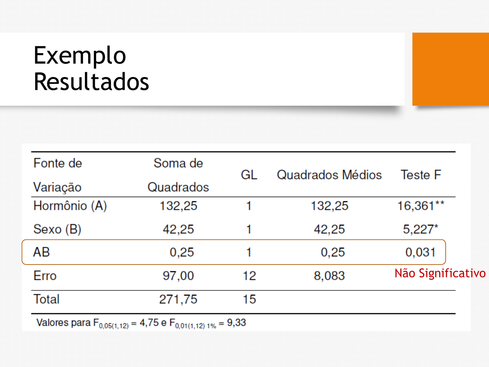
Como a interação Hormônio × Sexo não foi significativa, o efeito do hormônio não varia com o sexo (e vice-versa) — as conclusões devem se basear nos efeitos principais: os cordeiros que recebem hormônio ganham, em média, 5,75 kg a mais do que os que não recebem, independentemente do sexo; e há também um efeito principal significativo do sexo (diferença média de 3,25 kg).
Em R, esse exemplo pode ser reproduzido com:
# Fator1: Hormônio Stilbestrol (S: Sem, C: Com); Fator2: Sexo (M, F)
dados <- data.frame(Resposta = c(22,25,27,26, 25,32,29,28, 32,30,28,34, 29,34,36,37),
Fator1 = c('S','S','S','S','S','S','S','S', 'C','C','C','C','C','C','C','C'),
Fator2 = c('F','F','F','F','M','M','M','M', 'F','F','F','F','M','M','M','M'))
# ANOVA fatorial (efeitos principais + interação)
anova_hormo <- aov(Resposta ~ Fator1 + Fator2 + Fator1:Fator2, data = dados)
summary(anova_hormo)
par(mfrow = c(2, 2)); plot(anova_hormo); par(mfrow = c(1, 1))
# Gráfico de interação (base R)
with(dados, interaction.plot(x.factor = Fator1, trace.factor = Fator2, response = Resposta,
fun = mean, type = "b", pch = 19,
xlab = "Fator1", ylab = "Resposta média", trace.label = "Fator2"))
# Comparações múltiplas para cada fator
agricolae::HSD.test(anova_hormo, 'Fator1', alpha = 0.05, console = TRUE)
agricolae::HSD.test(anova_hormo, 'Fator2', alpha = 0.05, console = TRUE)Fatorial cruzado em blocos
Quando o experimento fatorial é conduzido em blocos, a fonte de variação devida aos blocos é conhecida e controlável, reduzindo a variabilidade atribuída ao erro. Exemplo: em um experimento fatorial instalado em blocos casualizados com 4 repetições, avaliaram-se os fatores Adubo Mineral (não/sim) e Adubo Orgânico (não/sim); o bloqueamento teve por finalidade controlar diferenças de fertilidade do solo.
# Resposta: rendimento; FatorA = Mineral (não/sim), FatorB = Orgânico (não/sim); 4 blocos
dados <- data.frame(Resposta = c(18, 19.6, 20.6, 19.2, 8.6, 15.0, 21, 19.6,
9.4, 14.6, 18.6, 18.4, 11.4, 15.8, 20.6, 20.2),
Bloco = rep(c('1','2','3','4'), each = 4),
Mineral = rep(c('1','1','2','2'), times = 4),
Organico = rep(c('1','2','1','2'), times = 4))
anova_adubo <- aov(Resposta ~ Mineral + Organico + Mineral:Organico + Bloco, data = dados)
summary(anova_adubo)
plot(anova_adubo)
# Gráfico de interação (nos dois sentidos)
medias <- dados %>% group_by(Mineral, Organico) %>% summarise(Media = mean(Resposta), .groups = "drop")
ggplot(medias, aes(x = Mineral, y = Media, color = Organico, group = Organico)) +
geom_point(size = 3) + geom_line(linewidth = 1) +
labs(title = "Gráfico de interação", y = "Resposta média", x = "Mineral") +
theme_minimal(base_size = 14)
# Tabela de médias e comparações múltiplas
model.tables(anova_adubo, type = "means")
agricolae::HSD.test(anova_adubo, 'Mineral', alpha = 0.05, console = TRUE)
agricolae::HSD.test(anova_adubo, 'Organico', alpha = 0.05, console = TRUE)
# Comparações múltiplas de Tukey entre as 4 combinações (efeitos simples)
library(lsmeans)
comparacoes <- lsmeans(anova_adubo, pairwise ~ Mineral/Organico, adjust = "tukey")
comparacoes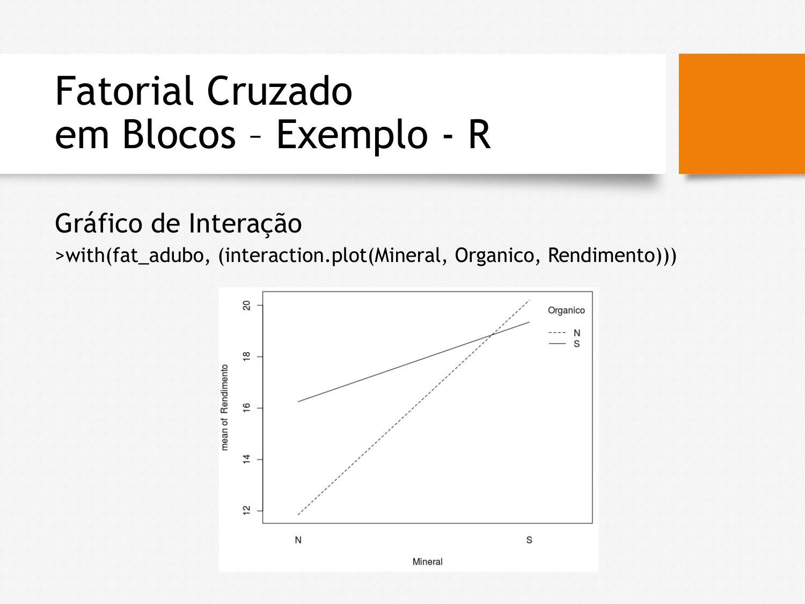
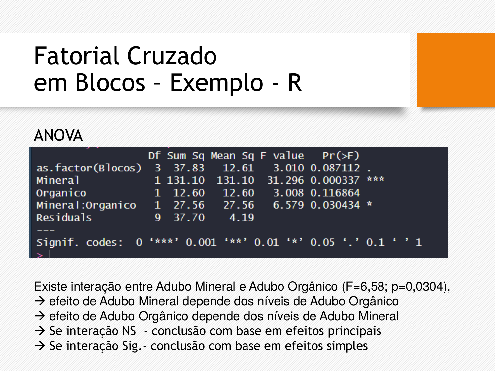
Havendo interação significativa, a conclusão deve ser baseada nos efeitos simples (comparações par a par entre as 4 combinações, obtidas acima com lsmeans), e não apenas nos efeitos principais isolados: neste exemplo, o efeito do Adubo Mineral foi mais efetivo do que o do Adubo Orgânico, sendo a aplicação de Adubo Mineral a mais indicada para maximizar o rendimento.
Experimentos fatoriais com três fatores
O mesmo raciocínio se estende para três (ou mais) fatores simultâneos — com a diferença de que, além dos três efeitos principais, passam a existir três interações duplas (A×B, A×C, B×C) e uma interação tripla (A×B×C). Como exemplo didático dessa extensão — já que o material de Paula Bracco cobre o caso de dois fatores — usamos um exemplo clássico do livro Design and Analysis of Experiments, de Douglas Montgomery: um engarrafador de refrigerante deseja entender as fontes de variação na altura de enchimento das garrafas, controlando três variáveis do processo — percentual de carbonatação (Fator A: 10, 12, 14), pressão de operação da enchedora (Fator B: 25, 30) e velocidade da linha, em garrafas por minuto (Fator C: 200, 250).
dados <- data.frame(
Resposta = c(-3,-1,-1,1,-1,0,0,1,0,2,2,6,
1,1,3,5,5,7,7,10,4,6,9,11),
FatorA = factor(rep(c('10', '12', '14'), c(12, 8, 4))),
FatorB = factor(rep(c('25', '25', '30', '30'), times = 6)),
FatorC = factor(rep(c('200', '250'), times = 12))
)
# ANOVA fatorial completa: 3 efeitos principais + 3 interações duplas + 1 interação tripla
anova_drink <- aov(Resposta ~ FatorA * FatorB * FatorC, data = dados)
summary(anova_drink)
par(mfrow = c(2, 2)); plot(anova_drink); par(mfrow = c(1, 1))
# Gráficos de interação dois a dois (mantendo o terceiro fator fixo)
interaction.plot(dados$FatorA, dados$FatorB, dados$Resposta,
xlab = "Fator A (carbonatação)", ylab = "Resposta média", trace.label = "Fator B")
interaction.plot(dados$FatorA, dados$FatorC, dados$Resposta,
xlab = "Fator A (carbonatação)", ylab = "Resposta média", trace.label = "Fator C")
interaction.plot(dados$FatorB, dados$FatorC, dados$Resposta,
xlab = "Fator B (pressão)", ylab = "Resposta média", trace.label = "Fator C")
# Médias ajustadas para gráficos de interação por painel (usando emmeans)
library(emmeans)
medias <- as.data.frame(emmeans(anova_drink, ~ FatorA * FatorB * FatorC))
ggplot(medias, aes(x = FatorA, y = emmean, color = FatorB, group = FatorB)) +
geom_point(size = 3) + geom_line(linewidth = 1) +
facet_wrap(~ FatorC) +
labs(title = "Interação Fator A × Fator B", subtitle = "Painéis por Fator C",
x = "Carbonatação (%)", y = "Média ajustada", color = "Pressão") +
theme_bw()A leitura dos resultados segue a mesma lógica do caso com dois fatores: interpretamos primeiro a interação tripla (se significativa, as interações duplas — e os efeitos principais — devem ser interpretadas dentro de cada nível do terceiro fator); se a interação tripla não for significativa, passamos a interpretar as interações duplas; e, na ausência de qualquer interação, interpretamos diretamente os três efeitos principais.
Delineamento em Parcelas Subdivididas
O delineamento em parcelas subdivididas (split-plot) é útil quando a aleatorização completa de todos os fatores é pouco prática. Exemplo motivador: um engenheiro quer avaliar o efeito da composição e do tempo de cozimento sobre a resistência de tijolos cerâmicos — um fatorial cruzado 4×3 completamente aleatorizado exigiria escolher ao acaso 1 composição, escolher ao acaso 1 tempo e colocar 1 tijolo no forno, repetindo esse processo 36 vezes: pouco prático e pouco econômico.
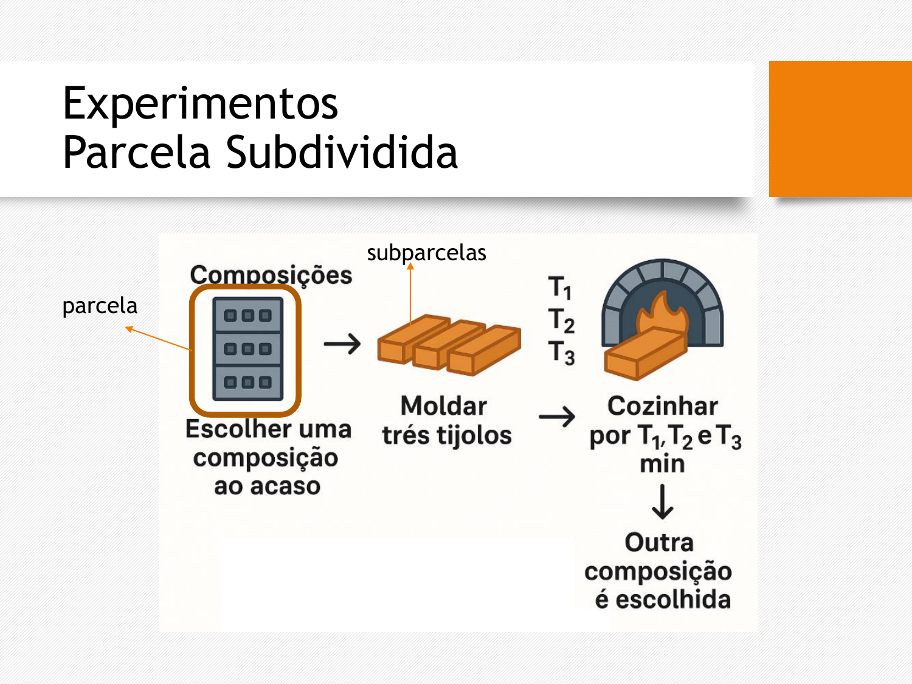
A alternativa prática — moldar todos os tijolos de uma composição de uma só vez — deixaria os efeitos da composição confundidos com as condições ambientais/temporais em que cada lote foi produzido. A solução do delineamento em parcelas subdivididas é: escolher uma composição ao acaso, moldar três tijolos e cozinhar cada um por um tempo diferente; escolher outra composição e repetir; e repetir todo o processo para as demais repetições. São feitas duas randomizações: primeiro, qual unidade experimental (parcela) recebe cada composição; depois, dentro de cada parcela, qual subparcela recebe cada tempo de cozimento.
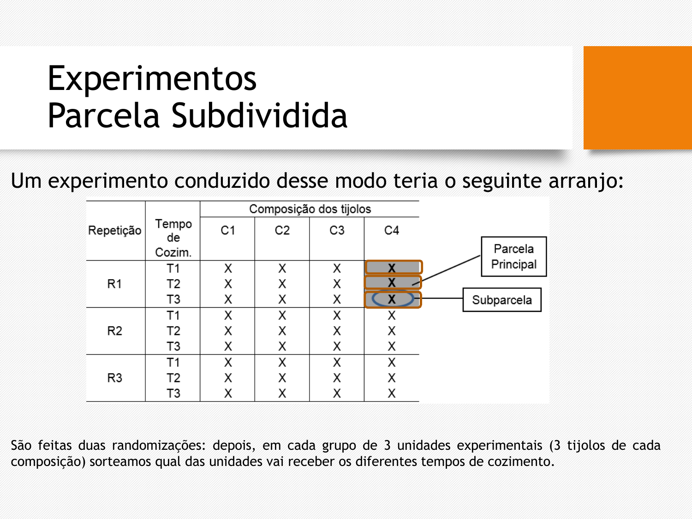
- Parcela principal: unidade experimental do fator alocado na parcela (neste exemplo, a composição).
- Subparcela: unidade experimental do fator alocado dentro da parcela (neste exemplo, o tempo de cozimento).
Vantagens, desvantagens e quando usar
Vantagem: aumento da precisão das comparações entre níveis do fator alocado na subparcela e da interação entre os fatores, em relação a um fatorial cruzado equivalente. Desvantagens: o fator alocado na parcela principal é medido com menor precisão do que seria em um experimento fatorial; e há maior complexidade na análise estatística, principalmente quando há perda de observações.
O delineamento em parcelas subdivididas é indicado quando: um dos fatores é mais difícil de manejar/alterar (por exemplo, tipo de solo, sistema de cultivo) — esse fator vai para a parcela principal, que exige parcelas maiores; o estudo envolve medidas repetidas ao longo do tempo (avaliações semanais ou mensais — como no caso “dias após o transplantio”, que veremos a seguir); há maior interesse (maior precisão desejada) em um dos fatores — esse vai para a subparcela; ou os recursos experimentais são limitados e o número de parcelas precisa ser otimizado.
Estrutura da ANOVA
A análise se divide em duas partes — uma para a parcela principal (fator A) e outra para a subparcela (fator B e a interação A×B):
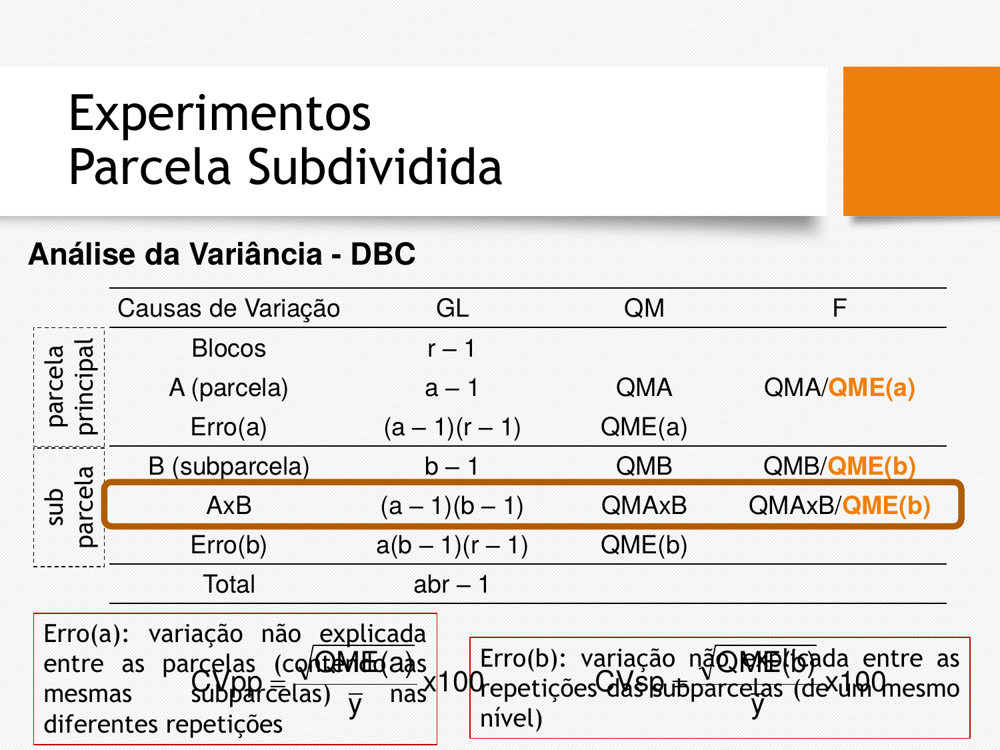
O Erro(a) representa a variação não explicada entre as parcelas (com as mesmas subparcelas) nas diferentes repetições, e é usado para testar o fator A (parcela principal): \(F = QMA/QME(a)\). O Erro(b) representa a variação não explicada entre as repetições das subparcelas (de um mesmo nível de A), e é usado para testar o fator B (subparcela) e a interação A×B: \(F = QMB/QME(b)\) e \(F = QM_{AxB}/QME(b)\). Como o Erro(b) tende a ser menor que o Erro(a), o fator alocado na subparcela — e a interação — são estimados com maior precisão.
Exemplo em R: resistência à tração do papel
Em R, a estrutura de dois erros (Erro(a) para a parcela principal, Erro(b) para a subparcela) é declarada explicitamente com o termo Error() dentro do aov(). O exemplo a seguir — também um clássico do livro de Montgomery — avalia a resistência à tração do papel em função do método de preparo da polpa (fator da parcela principal, 3 níveis) e da temperatura de cozimento (fator da subparcela, 4 níveis), em 3 repetições (blocos):
# Whole-plot factor: método de preparo da polpa (3 níveis)
# Subplot factor: temperatura de cozimento (4 níveis)
# Réplicas (blocos): 3
paper <- data.frame(
Replicate = factor(rep(1:3, each = 12)),
Method = factor(rep(rep(c(1,2,3), each = 4), 3)),
Temperature = factor(rep(c(200,225,250,275), 9)),
Strength = c(
# Réplica 1
30,35,37,36, 34,41,38,42, 29,26,33,36,
# Réplica 2
28,32,40,41, 31,36,42,40, 31,30,32,40,
# Réplica 3
31,37,41,40, 35,40,39,44, 32,34,39,45
)
)
# Erro(a) = Replicate/Method (parcela principal); Erro(b) = resíduo (subparcela)
paper.aov <- aov(Strength ~ Method * Temperature + Error(Replicate/Method), data = paper)
summary(paper.aov)A saída do summary() retorna duas tabelas de ANOVA separadas — uma dentro de Error: Replicate:Method (o Erro(a), usado para testar o efeito do Método) e outra dentro de Error: Within (o Erro(b), usado para testar o efeito da Temperatura e a interação Método×Temperatura) — exatamente a estrutura de dois estratos de erro apresentada acima.
Exemplo de referência: métodos de plantio e espaçamento em soja
Um experimento avaliou o efeito de Métodos de Plantio (4 níveis: convencional — M1, plantio direto com herbicida A — M2, B — M3, C — M4) e Espaçamento entre linhas em cm (4 níveis: 17, 34, 51 e 68 — E1 a E4) sobre o rendimento de soja. Os métodos de plantio constituíram as parcelas principais, arranjadas em blocos casualizados com 4 repetições, e os espaçamentos, as subparcelas (4 repetições por parcela; 16 repetições por subparcela).
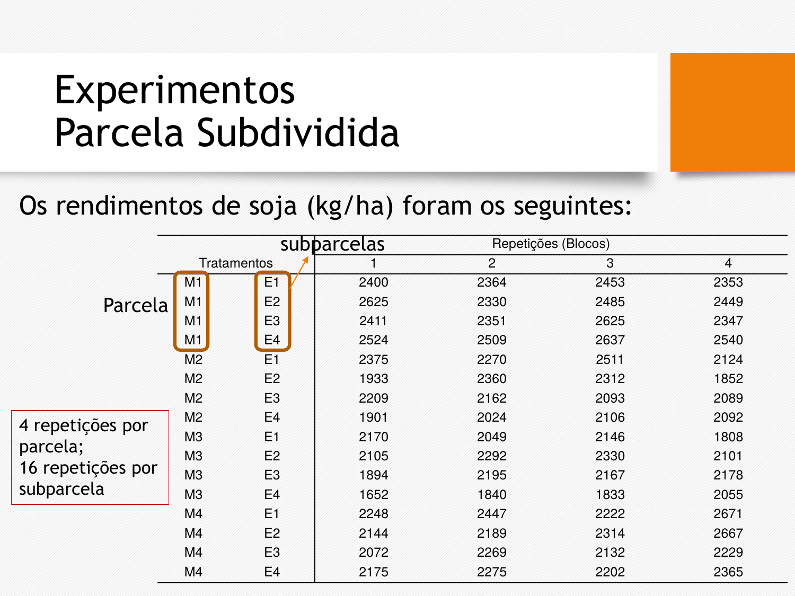
Aplicação em artigo científico
Cobertura de solo (TNT) e dias após o transplantio em planta ornamental (DOI: 10.1590/S1806-66902013000400016). Nas parcelas, os tratamentos se constituíram de dois sistemas de cultivo (com e sem cobertura de solo em polipropileno preto, TNT); nas subparcelas, as épocas de amostragem das plantas: 14, 28, 42, 56, 70, 84, 98 e 112 dias após o transplantio (DAT), com 4 repetições. Foram avaliados o acúmulo de massa seca em diferentes partes da planta, área foliar e taxas de crescimento.
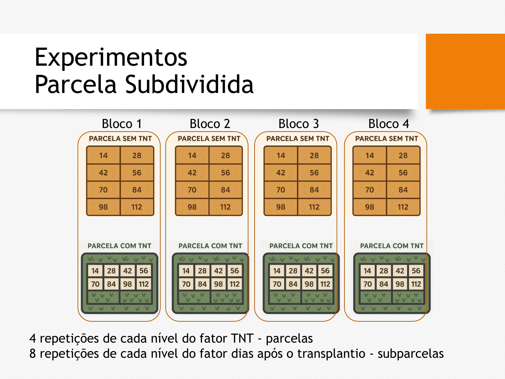
Principais resultados: o efeito de TNT (fator da parcela principal) não foi significativo para nenhuma das respostas avaliadas, e não houve interação significativa entre TNT e dias após o transplantio — ou seja, a cobertura de solo não influenciou o acúmulo de massa seca, a área foliar ou as taxas de crescimento. Já o efeito de dias após o transplantio (fator da subparcela, quantitativo) foi significativo para praticamente todas as respostas, sendo complementado por análise de regressão: por exemplo, os frutos se comportaram como dreno preferencial da planta, chegando ao final do ciclo (112 DAT) com 47,77% do total da massa seca acumulada.
Exercício complementar: ANOVA em R
Como exercício de fixação, considere um DCC avaliando o efeito de 5 concentrações de um determinado composto (15, 20, 25, 30 e 35) sobre a resistência de fibras de algodão, com 5 repetições cada:
dados <- NULL
dados$Concentracao <- c(15,15,15,15,15,20,20,20,20,20,25,25,25,25,25,30,30,30,30,30,35,35,35,35,35)
dados$Repeticao <- c(1,2,3,4,5,1,2,3,4,5,1,2,3,4,5,1,2,3,4,5,1,2,3,4,5)
dados$Resistencia <- c(7,7,15,11,9,12,17,12,18,18,14,18,18,19,19,19,25,22,19,23,7,10,11,15,11)
dados <- as.data.frame(dados)
# ANOVA (DCC)
anova <- aov(Resistencia ~ factor(Concentracao), data = dados)
summary(anova)
# Comparações múltiplas de Tukey
library(agricolae)
tukey_res <- HSD.test(anova, trt = 'factor(Concentracao)')
tukey_resScript completo disponível para download na seção de materiais abaixo.
Materiais e Referências
O conteúdo desta página foi construído a partir do material didático “Análise de Variância” elaborado por Paula Bracco, adaptado do material da prof. Lisiane Selau. Slides originais (PDF):
- 1. Introdução aos Experimentos
- 2. Delineamento Inteiramente Casualizado (DCC)
- 3. Delineamento em Blocos Completos (DBC)
- 4. Experimentos Fatoriais
- 5. Experimentos em Parcela Subdividida
- Script R: exemplo de ANOVA (resistência de fibras de algodão)
Os demais exemplos em R reproduzidos ao longo da página vêm da coleção de scripts do professor (pasta codigos/, prefixo area_3):
- Script: ANOVA no DCC (variedades de cana-de-açúcar)
- Script: ANOVA no DBC (cultivares de trigo)
- Script: ANOVA no DBC — experimento lúdico (comparação de sabores)
- Script: experimentos fatoriais com dois fatores (hormônio×sexo; adubo mineral×orgânico em blocos)
- Script: experimentos fatoriais com três fatores
- Script: parcela subdividida / split-plot
Artigos científicos utilizados como exemplos de aplicação:
- Enxertia em mudas de baruzeiro — DOI: 10.5902/1980509869090
- Irrigação em feijão-vagem — DOI: 10.1590/S0100-69162011000200012
- Nutrientes do solo em cassava (mandioca) — artigo completo
- Cobertura de solo (TNT) em planta ornamental — DOI: 10.1590/S1806-66902013000400016